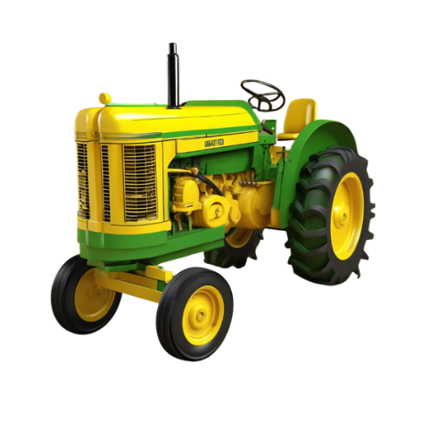

Descubra como a inovação e práticas sustentáveis
estão moldando o futuro da agricultura.
Explore os desafios atuais enfrentados pelo setor agrícola e as oportunidades emergentes impulsionadas pela inovação tecnológica e práticas sustentáveis. Descubra como estamos moldando o futuro da agricultura de forma responsável e eficiente.
